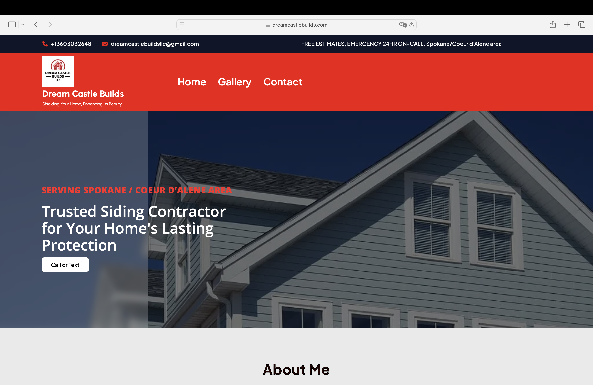

Portfolio

HTML, CSS, PHP, WordPress, Elementor

HTML, CSS, PHP, WordPress, Elementor
What Service You Will Get From Me
By choosing me as your web developer, you can expect a dedicated and adaptable professional who is passionate about creating exceptional online experiences. I bring a blend of technical skills, creative problem-solving, and a commitment to collaborative success. Whether it’s designing visually appealing interfaces or building robust back-end systems, I am poised to contribute to the success of your projects.